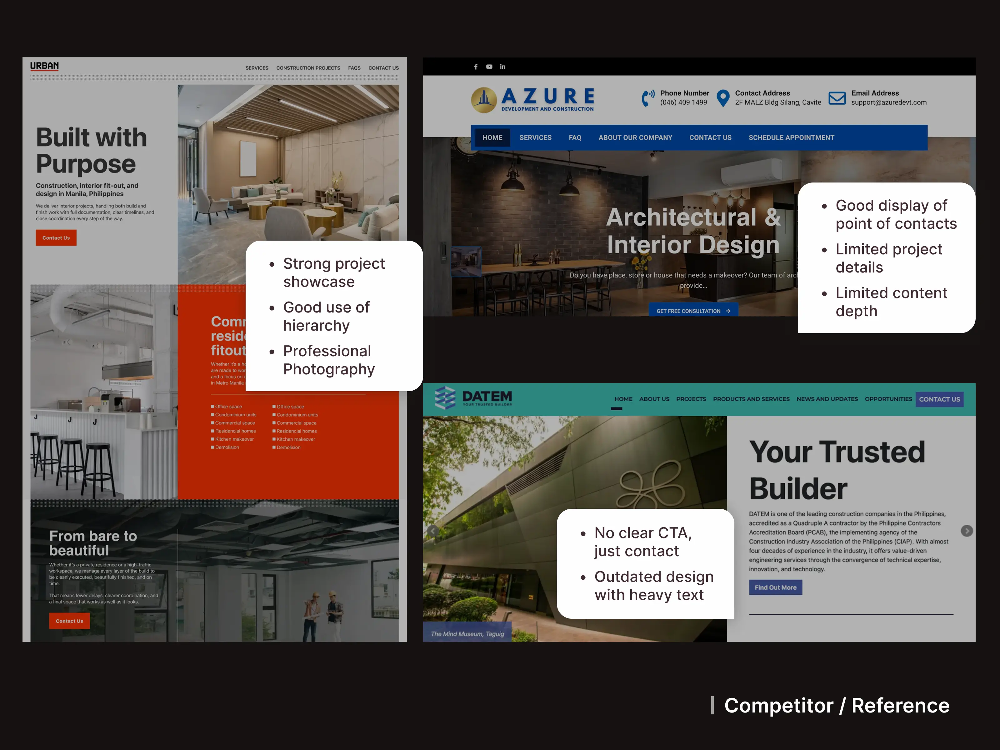
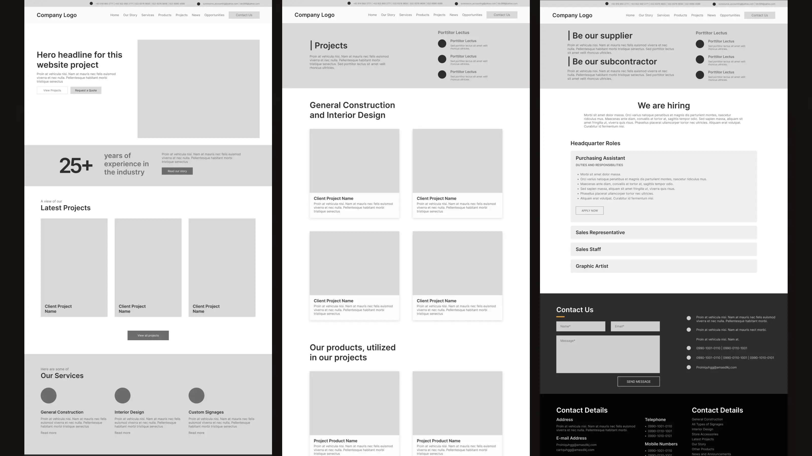
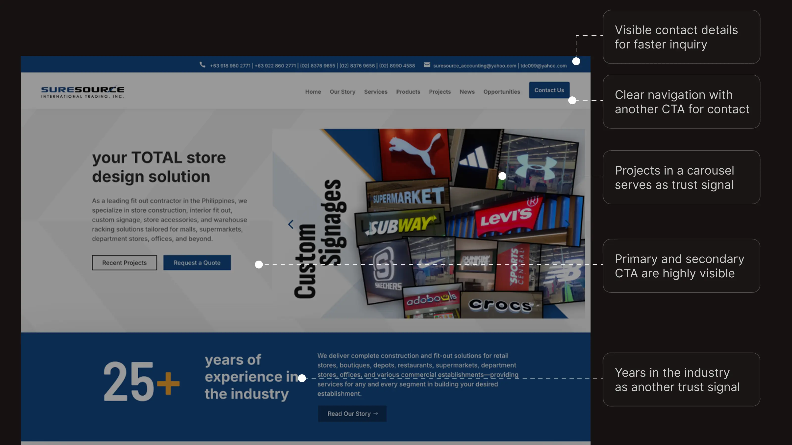
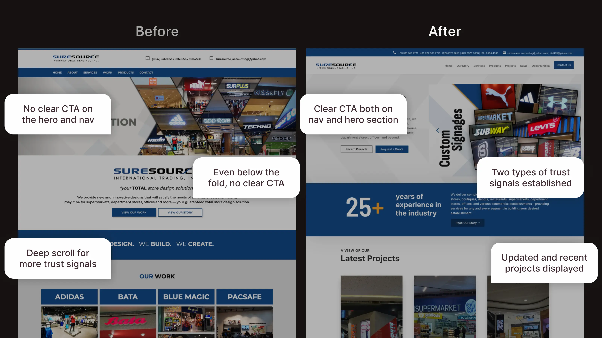
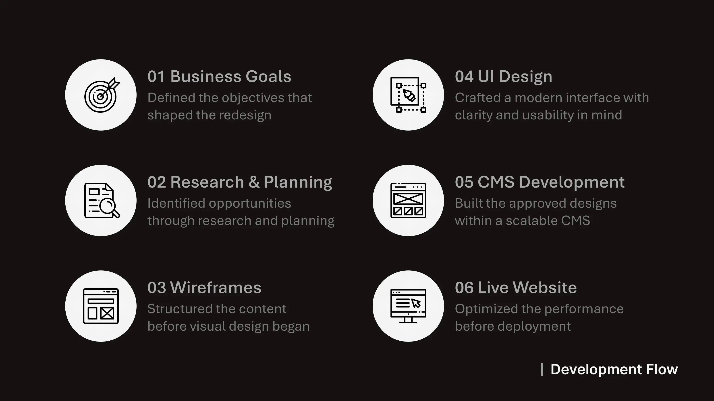
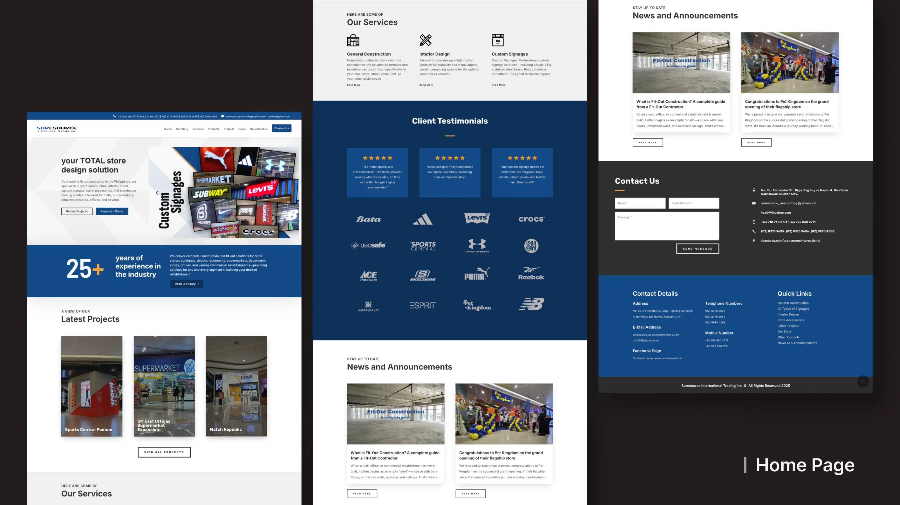
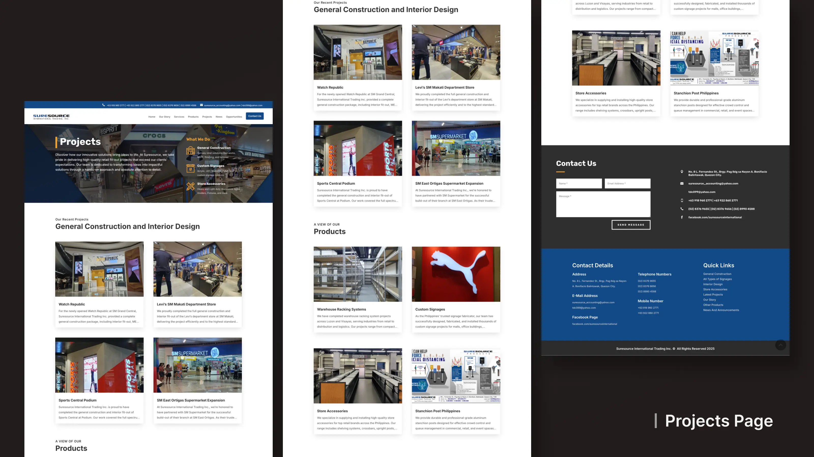
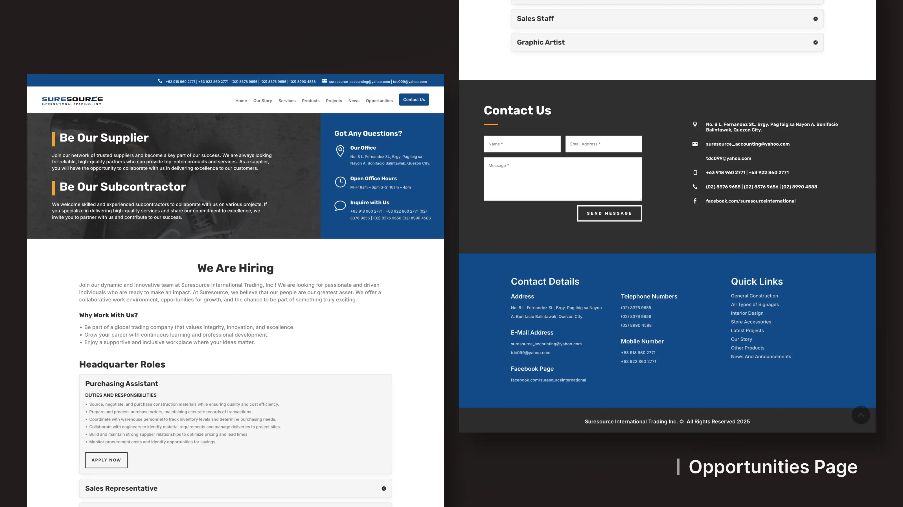
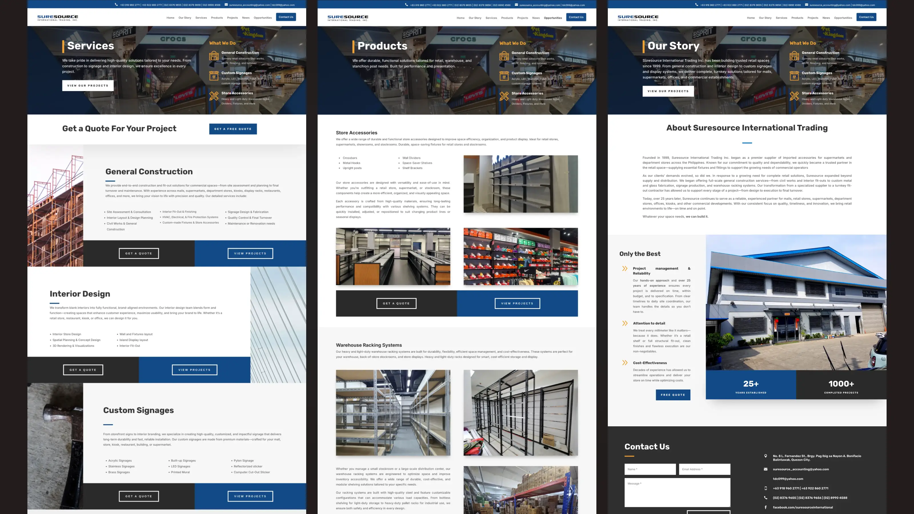

Freelance Client Project
Website UI Redesign

01. Overview
Suresource International Trading Inc. is a Philippine-based fit-out contractor specializing in general construction, interior design, custom signages and store accessories. As the company prepared for its next stage of growth, its static website no longer reflected the quality of its work or supported its evolving business goals.
I was brought into the project to redesign the company's digital presence by creating a modern website that could be implemented in WordPress using the Divi Builder. Beyond improving the visual design, the project focused on restructuring content, expanding the website architecture and creating a scalable foundation for future business growth.
- Role: UI Designer (Freelance)
- Scope: Website Redesign (5+ pages), UI Design, WordPress Implementation
- Tools: Figma, WordPress (Divi Builder), XAMPP, Trello, GitHub
02. Business Challenge
Suresource's existing website was built as a static
site, making content
updates dependent on a developer and limiting the company's ability to keep information current.
As the business entered a new phase, the website needed to better
represent the company's
capabilities while supporting future growth.

The redesign aimed to modernize the user experience, introduce a content management system, improve lead generation and expand the site's information architecture through new pages for products, careers, company news and quote requests.
03. Research & Information Architecture

I analyzed competitor websites and reviewed examples provided by the client to understand how construction and fit-out companies present their services, projects and credibility online. While several competitors had similarly outdated websites, the research highlighted opportunities to improve information hierarchy, strengthen calls-to-action and better showcase completed work.
These findings informed a broader content strategy that extended beyond visual redesign. The website architecture was reorganized to introduce dedicated pages for products, careers, company news, and quote requests, creating a clearer user journey while supporting the company's future business objectives.

The redesigned site structure expanded the website beyond its original pages to better support the company's evolving services and business goals.
04. Redesign Strategy
The redesign began with low-fidelity wireframes to establish a clear content hierarchy before focusing on visual design. Priority was given to presenting the company's services, completed projects and contact pathways in an order that aligned with how prospective clients typically evaluate a contractor.

Establishing the structure early also created a consistent framework that could be applied across the rest of the website, making it easier to introduce new sections while maintaining a cohesive user experience.
With the content structure established, the visual redesign focused on improving clarity, credibility, and conversion.

The final interface emphasized visual hierarchy, simplified navigation and strategically placed calls-to-action to help visitors quickly understand the company's services and take the next step. Trust-building elements such as project showcases and client references were given greater prominence.

05. Implementation Considerations
Once the designs were approved, they were translated into WordPress using the Divi Builder, requiring design decisions to align with the capabilities of a content management system while preserving the intended user experience. Reusable layouts and a consistent visual system helped streamline implementation and made future content updates easier for the client.

This project also introduced me to a collaborative development workflow. Working alongside a remote developer meant adapting to an established deployment process, communicating across time zones and balancing design intent with technical constraints throughout implementation. The implementation followed a structured workflow that balanced design consistency, CMS flexibility and responsive development.
06. Final Experience

The final redesign modernizes Suresource's digital presence while creating a more scalable platform for future growth. Improved navigation and expanded content provide prospective clients with a clearer path to explore the company's services, projects and contact opportunities.



07. Reflection
This project strengthened my understanding of designing for real business needs rather than purely visual outcomes. It highlighted the importance of aligning user experience with business goals, structuring content strategically and designing with implementation constraints in mind.
Beyond the design work itself, collaborating on a live client project provided valuable experience working within a development workflow and adapting designs to a production environment. Skills that continue to influence how I approach web design today.
Other Works

Concept Project | UI/UX Design
Created a skincare experience through a companion app that connects assessments, routines and product tracking
Explore Project
Personal Project | Web Design & Development
Designed and built a responsive portfolio from scratch that combines UI design with front-end implementation
Explore Project